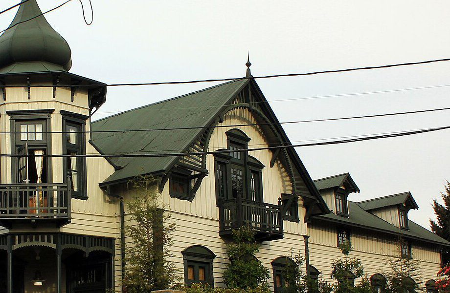

Diagnóstico térmico y eficiencia energética
La termografía es una cámara que muestra por dónde se escapa el calor de la vivienda. El informe indica dónde se pierde calor y qué mejoras se recomiendan.
Qué incluye
- Inspección con termografía
- Identificación de pérdidas de calor
- Detección de puentes térmicos: zonas donde el calor atraviesa la estructura con más facilidad
- Revisión de problemas de aislación
- Recomendaciones de mejoramiento térmico